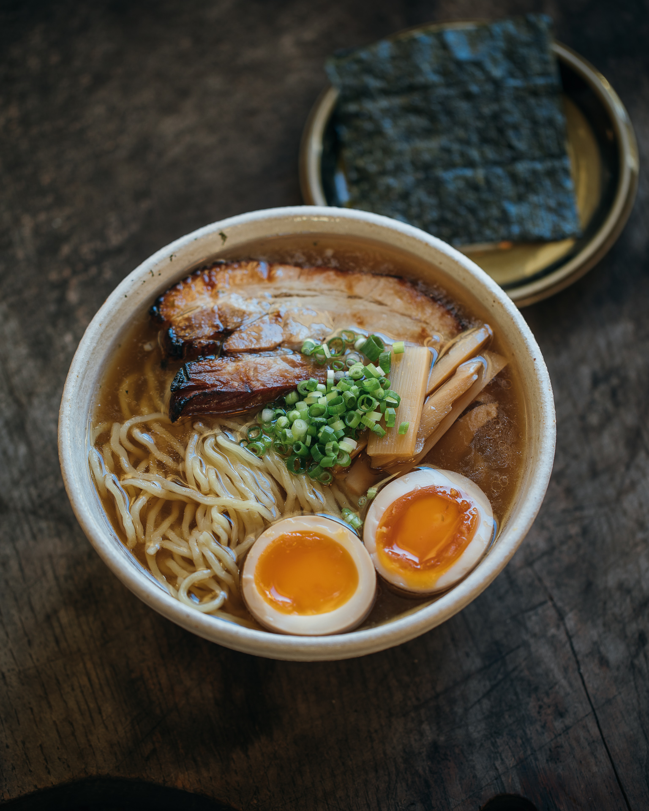
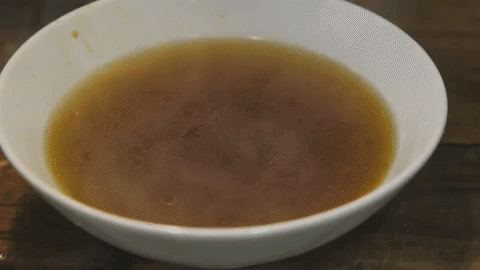

Soup for the soul

INGREDIENTS
For the Ramen Broth
- For the ramen broth, you will need mild (low-sodium) white miso paste, gochujang, grated garlic, dashi stock powder, low-sodium soy sauce, water, and canola oil.
- To keep the level of sodium low since Miso is already very salty in itself, we chose to use low-sodium miso as well as soy sauce. Additionally, you can replace the gochujang by doubanjiang, which is what is traditionally used. We just love the slight sweetness and richness of the gochujang.
For the Toppings
- For the toppings, you will need ramen noodles of your choice, eggs, oyster mushroom, low-sodium soy sauce, sesame oil, garlic powder, brown sugar, canola oil and green onions.
Prepping the Toppings
- Cook the noodles. Cook the ramen noodles according to packaging’s instructions. Drain off excess water and set aside.
- Cook the ramen eggs. To make the eggs, fill a small deep pot with water, making sure there is enough water for the eggs to submerge in. Bring the water to a boil over medium high heat. Prepare a bowl of iced water and set aside. Once the water is boiling, take eggs out of the fridge and gently put them in the water, and reduce heat to medium to maintain a gentle boil. Cook the eggs for 7 minutes. After 7 minutes, take the eggs out of the boiling water and immediately submerge them in the bowl of iced water. Let cool for at least 10 minutes. Peel of the egg shells thoroughly and set aside for topping.
- Cook the mushroom. To make the mushroom toppings, cut oyster musroom into small, thin strips and put in a mixing bowl. Add the low-sodium soy sauce, sesame oil, garlic powder, and brown sugar into the bowl of mushroom and combine well until the brown sugar is well dissolved. Heat canola oil on a pan over medium high heat, and stir fry the mushrooms for 3-5 minutes, or until cooked. Remove from heat and set aside.
Prepping the Ramen Broth
- Prep the dashi broth. To make dashi broth, heat 4 cups of water in a pot over medium high heat. Once the water simmers, add in 2 tbsp of dashi stock powder and mix well. Let water simmer until the dashi stock powder is well dissolved. Remove from heat and transfer dashi broth into a bowl and set aside.
- Make the broth. To make the ramen broth, heat 2 tbsp of canola oil in a pot over medium heat. Add in the minced garlic, 5 tbsp of mild miso paste and 3 tsp of gochujang. Stir-fry for about 2-3 minutes or until the garlic is tender and fragrant, and the miso paste and gochujang are softer. Add in the 4 cups of dashi broth and increase heat to medium high. Combine well using a whisk, making sure that all the miso paste and gochujang are well dissolved. Once the broth comes to a boil, turn heat off and add in 1 tbsp of low-sodium soy sauce and mix well. Taste and adjust for saltiness and sweetness.
COMBINE THEM TOGETHER!

Back to Homepage